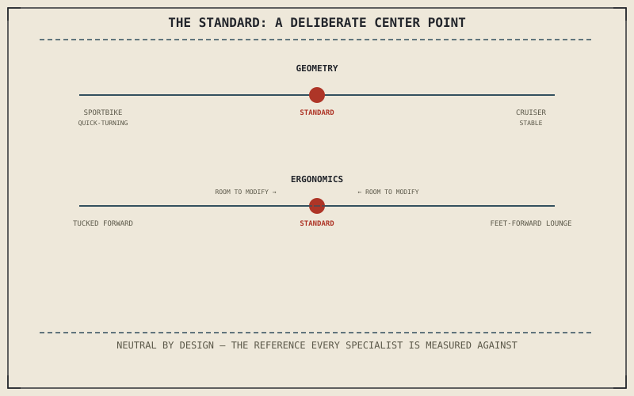

Every category this part covers is defined by what it deliberately gives up in exchange for what it optimizes. The standard, sometimes called a naked, is the one category built specifically not to make that trade hard in either direction — and understanding why that's a genuine engineering choice, not an absence of one, is what makes every other chapter in this part make sense by comparison.
Chapter 13.8 closed Part XIII by turning toward the different categories of motorcycle built from the factory as different answers to different problems. This chapter opens with the category that answers the least specific problem of all, on purpose.
Neutral Geometry: Not Optimized, Deliberately
Chapter 4.3 established rake and trail as the two numbers shaping how urgently or how confidently a motorcycle steers, and a standard's geometry typically sits roughly centered between a sportbike's aggressive, quick-turning figures and a cruiser's relaxed, stable ones. That center position isn't a compromise reached by accident — Chapter 4.4's self-centering trail effect still applies fully at a standard's geometry, just tuned to avoid committing hard to either the sharp responsiveness or the effortless straight-line stability its more specialized siblings chase instead.
Upright Ergonomics: The Default Position
Chapter 13.4 described a stock motorcycle's fit as built around an assumed rider, and a standard's upright, moderate-reach riding position is close to the actual default that assumption is measured against — neither the forward-leaning tuck a sportbike commits to nor the feet-forward lounge a cruiser adopts. This is exactly why a standard is usually the easiest starting point for the kind of ergonomic modification Chapter 13.4 described: there's genuine room to move in either direction, sportier or more relaxed, because the standard never committed hard to either end of that range to begin with.
A standard's geometry and ergonomics sit deliberately centered, not because centered is inherently superior, but because it doesn't over-commit to any single riding style — which is exactly what makes it the reference point every more specialized category in this part gets measured against.

A diagram showing a standard motorcycle positioned at the center of a spectrum between sportbike-quick geometry and cruiser-stable geometry, and between sportbike-tucked and cruiser-relaxed ergonomics, illustrating deliberate neutrality rather than compromise.
Why "No Specialization" Is Itself a Design Choice
A standard trades away a sportbike's outright cornering speed, a cruiser's low-speed lounging comfort, and a tourer's wind protection — genuine losses against each of those specialists on their own terrain. In exchange, it answers a different, entirely legitimate problem: a rider whose actual use case is varied and unpredictable, mixing commuting, occasional distance, and occasional spirited riding, rather than heavily weighted toward any single one of them. Versatility is a real design target a chassis and ergonomics can be built around, not simply what's left over after failing to specialize.
A Common Misconception, Cleared Up Early
It's a common assumption that "naked" or "standard" means generic, basic, or somehow unfinished compared to a more purpose-built category. This chapter has now shown neutral geometry and upright ergonomics as deliberate engineering decisions with their own real trade-offs against every specialized category ahead, not the absence of a decision. The standard loses on any single specialist's home ground and is built to do exactly that, in exchange for not losing badly anywhere at all.
Where This Leads
Chapter 14.2 turns to the first genuinely specialized category: the sportbike, defined by exactly what it optimizes away from the neutral baseline this chapter just established.
Key Concepts to Remember
- A standard's geometry sits deliberately centered between quick-turning and stable extremes, rather than optimized toward either one.
- Its upright ergonomics sit close to the default rider position other categories deliberately move away from in one direction.
- Versatility is a genuine design target, not the absence of one, and it comes with real trade-offs against every specialized category built around a narrower use case.
Cross-References
| ← Ch. 4.3 | Established rake and trail shaping steering urgency and stability; this chapter treats a standard's geometry as deliberately centered between those extremes. |
| ← Ch. 4.4 | Established trail's self-centering effect; this chapter notes it still applies fully at a standard's neutral geometry. |
| ← Ch. 13.4 | Established a stock motorcycle's assumed rider position; this chapter treats a standard's upright ergonomics as close to that same default. |
| → Ch. 14.2 | Covers sportbikes as the first specialized category, built around cornering performance. |